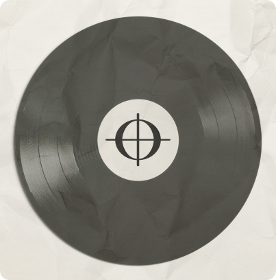

nieuwste aflevering
Aflevering 6: Het Grote Experiment: Ons Eigen Nummer Maken!
In de laatste aflevering van deze serie gaan we alles wat we tot nu toe hebben besproken in de praktijk brengen. We nemen je mee in het creatieve proces van het maken van een compleet nummer, van het kiezen van de eerste akkoorden tot het schrijven van de tekst, het opnemen van geluiden, en uiteindelijk het produceren en mixen van de track.... LEES MEER
